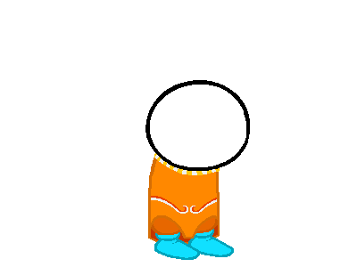
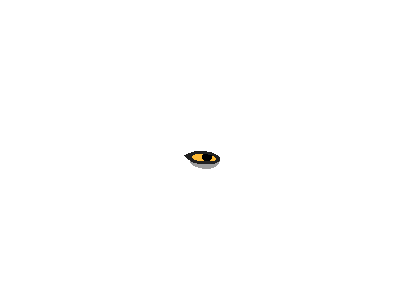
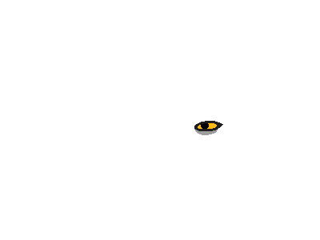
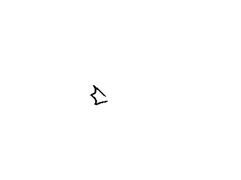
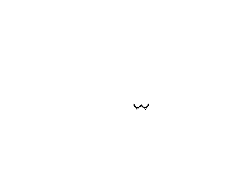
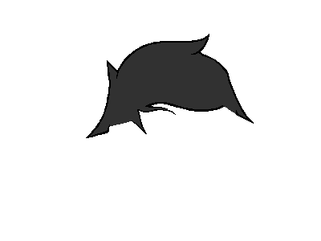
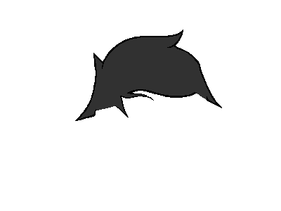

Want to Contribute???
Send sprite parts to jadedResearcher on tumbler, gmail or discord. All submitted sprites are assumed to be able to be used for dollmakers, sim work or derivative games.
The Dollmaker has particular requirements if you want your sprites to work. Test your parts here
Colors
First and foremost: COLORS ARE VERY IMPORTANT. Do not use colors outside of this pallete unless you want them to be unreplaced.
Image Size
All doll parts are 400x300 pixels. YES even if it's something small like eyes. There will be a lot of empty space, this is normal.
Positioning
If you want something to be part of a layer, position it exactly where existing things are on that layer. Put your eyes where the eyes already are, for example.
Things like hair and fins LOOK like a single layer but are actually multiple. Part of the hair/fin goes on top of the face, part behind.
Here are example images for all layers. You can save these pictures and use them as guidelines for aligning parts.
      

Tutorial for Adding More Cherub Parts